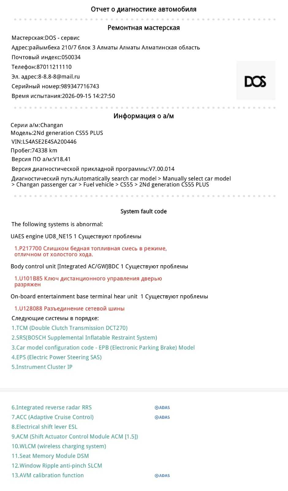
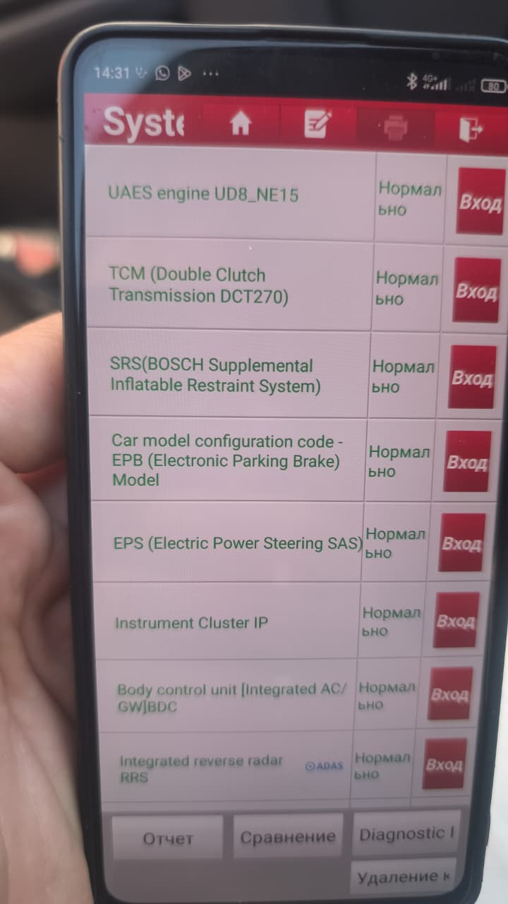
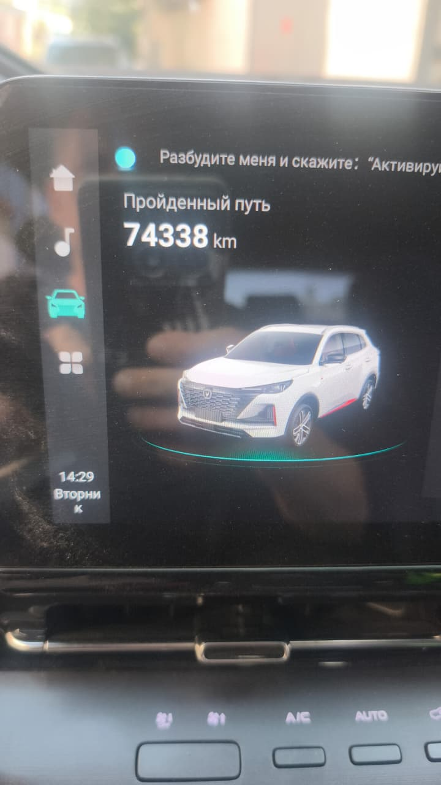

🚗 Компьютерная диагностика Changan CS55 PLUS — горит Check Engine, ошибка P217700
В этот раз к нам на компьютерную диагностику автомобиля приехал Changan CS55 PLUS второго поколения.
Владелец обратился с распространённой, но требующей правильной диагностики проблемой — на панели приборов загорелся индикатор Check Engine.
📋 Данные автомобиля
🚘 Марка: Changan
🚙 Модель: CS55 PLUS, 2-е поколение
📅 Пробег: 74 000 км
⚠️ Жалоба владельца: горит Check Engine
Для определения причины неисправности была проведена компьютерная диагностика электронных систем автомобиля.
🔌 Подключаем диагностическое оборудование

Если на приборной панели загорелся Check Engine, простого удаления ошибки из памяти блока управления недостаточно.
Код неисправности необходимо считать, расшифровать и определить, какая система могла стать причиной его появления.
После подключения диагностического оборудования и проверки блока управления двигателем была обнаружена ошибка:
⚠️ P217700 — слишком бедная топливная смесь в режиме, отличном от холостого хода
Другими словами, электронный блок управления двигателем зафиксировал ситуацию, при которой при определённых режимах работы двигателя состав топливовоздушной смеси оказался слишком бедным.
Это важная информация для дальнейшего поиска неисправности.
🔎 Что означает бедная топливная смесь?
Для нормальной работы двигателя необходимо правильное соотношение воздуха и топлива.
Если блок управления определяет, что топлива относительно поступающего воздуха недостаточно, он пытается скорректировать смесь.
Когда необходимые корректировки выходят за предусмотренные пределы, в памяти ЭБУ может регистрироваться соответствующий код неисправности и загораться Check Engine.
При этом сама ошибка P217700 ещё не означает, что необходимо сразу менять какой-либо конкретный датчик или деталь.
Сначала нужно искать причину.

⛽ Одно из направлений проверки — топливная система
Учитывая характер ошибки и пробег автомобиля 74 000 км, владельцу была дана рекомендация обратить внимание на топливную систему.
В частности:
🔧 проверить состояние системы подачи топлива;
⛽ проверить топливный фильтр и, исходя из пробега и истории обслуживания, рассмотреть его замену;
💉 проверить работу топливных форсунок.
Загрязнение или снижение пропускной способности элементов топливной системы потенциально может привести к недостаточной подаче топлива в определённых режимах работы двигателя.
⛽ Почему стоит обратить внимание на топливный фильтр?
Задача топливного фильтра — задерживать загрязнения и не допускать их попадания дальше в топливную систему.
Со временем его пропускная способность может снижаться.
При определённых условиях двигатель способен нормально работать на одном режиме, но при увеличении нагрузки потребность в топливе возрастает.
Поэтому при диагностике ошибки, связанной с бедной смесью, состояние топливной системы является одним из направлений дальнейшей проверки.
В данном случае с учётом пробега автомобиля была выдана рекомендация по проверке и замене топливного фильтра с учётом регламента и истории обслуживания.
💉 Следующий этап — проверка форсунок
Также владельцу рекомендовано проверить топливные форсунки.
Форсунка должна подавать необходимое количество топлива и правильно его распылять.
При загрязнении или нарушении работы форсунок могут возникать:
⚠️ отклонения топливной смеси;
⚠️ нестабильная работа двигателя;
⚠️ потеря мощности;
⚠️ увеличение топливных коррекций;
⚠️ повторное появление Check Engine.
При этом менять форсунки только на основании кода P217700 неправильно.
Сначала необходимо проверить их работу и только после подтверждения неисправности принимать решение о ремонте или замене.
🔍 Почему нельзя просто удалить P217700?
Иногда после появления Check Engine автовладелец просит:
«Просто удалите ошибку».
Удалить код из памяти ЭБУ технически можно, но это не устраняет причину его появления.
Если неисправность сохраняется, блок управления снова обнаружит отклонение и Check Engine может загореться повторно.
Поэтому правильная последовательность выглядит иначе:
🔌 считать код неисправности;
📊 проанализировать данные;
🔎 определить направления дальнейшей проверки;
🔧 устранить обнаруженную причину;
💻 выполнить повторную компьютерную диагностику.
🧰 Что ещё может проверяться при ошибке бедной смеси?
Если после обслуживания топливной системы ошибка P217700 возвращается, диагностику необходимо продолжать.
В зависимости от результатов первичных проверок специалист может дополнительно проверить:
🌬️ наличие неучтённого воздуха во впускной системе;
📊 показания датчиков двигателя;
⛽ давление и производительность топливной системы;
💉 работу форсунок;
🔌 электрические цепи соответствующих компонентов;
📈 краткосрочные и долгосрочные топливные коррекции.
Важно не заниматься последовательной заменой деталей наугад, а двигаться от результатов диагностики.
✅ Результат компьютерной диагностики Changan

В результате обращения была считана и расшифрована зарегистрированная системой управления двигателем неисправность:
P217700 — слишком бедная топливная смесь в режиме, отличном от холостого хода.
С учётом полученных данных и пробега автомобиля 74 000 км владельцу были даны рекомендации:
⛽ проверить состояние топливного фильтра и при необходимости выполнить замену с учётом истории обслуживания;
💉 провести проверку работы топливных форсунок;
🔎 после выполнения необходимых работ проконтролировать параметры системы и наличие повторного появления ошибки.
Таким образом, компьютерная диагностика позволила не просто увидеть надпись Check Engine, а определить конкретное направление дальнейшего поиска неисправности.
🌐 Компьютерная диагностика Олег
☎️ 8-701-121-11-10 Олег
Читайте также: «Toyota Grand Highlander HEV 2025 — ошибка P24507E» и «Lexus RX350 ошибка P0037 — Check Engine и Traction».